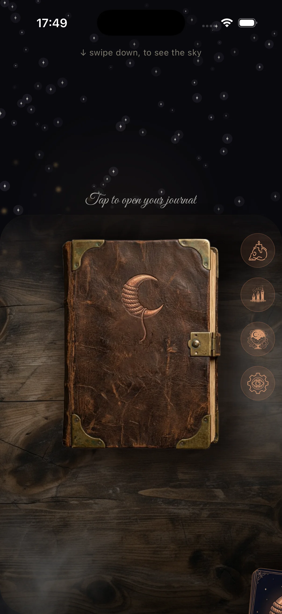
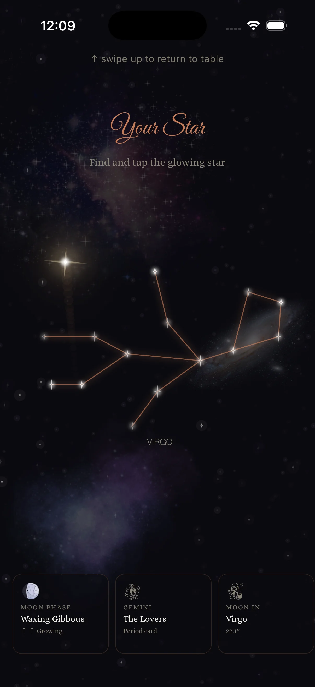
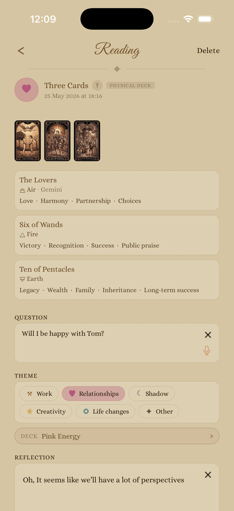
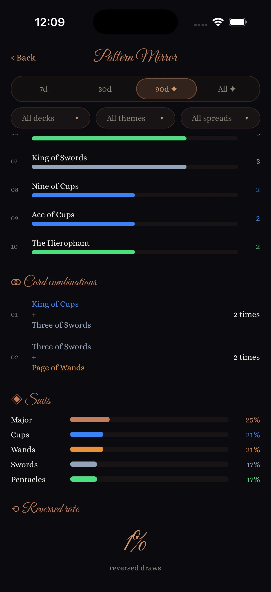
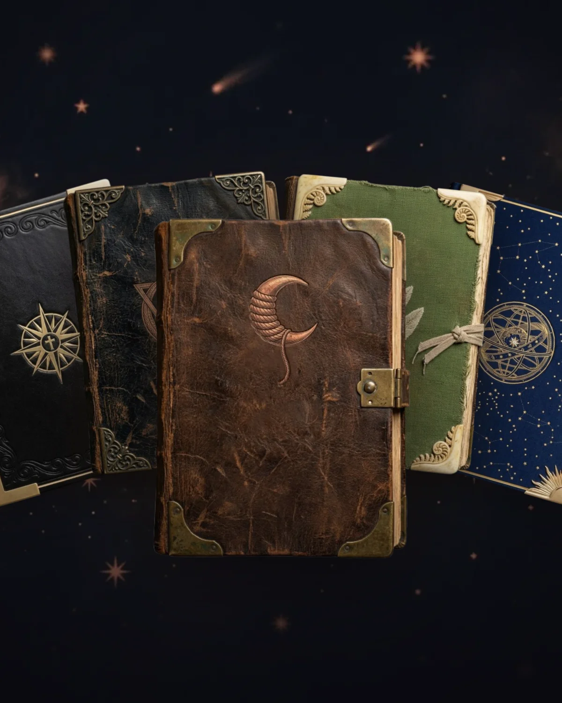
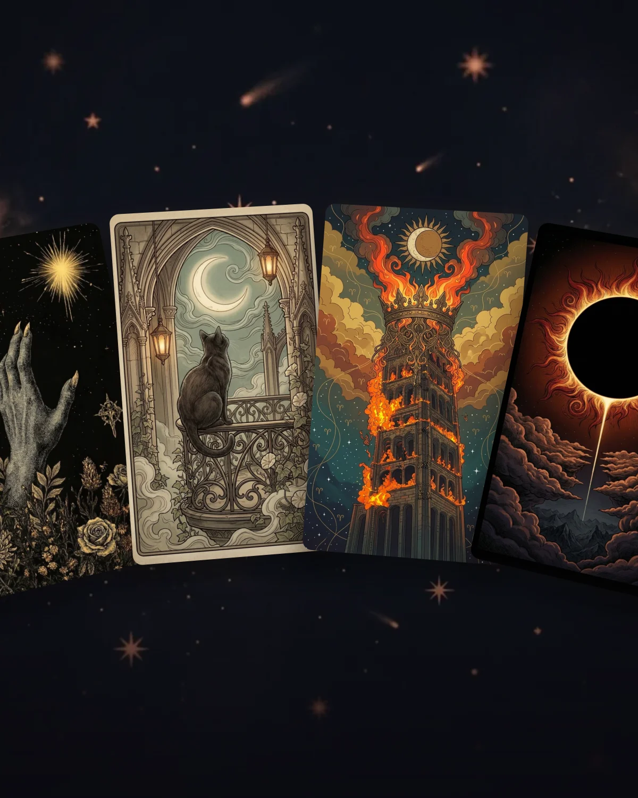
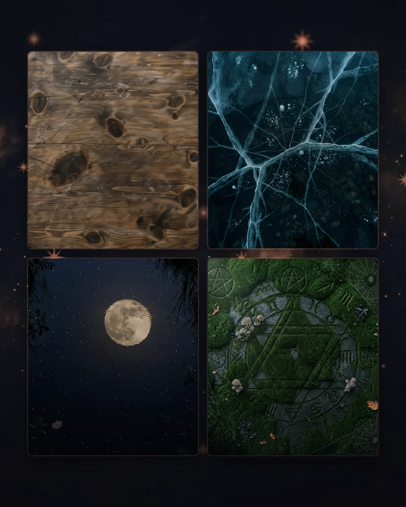

Pull the thread.
A daily reflection ritual
A private reflection journal built around a single daily card. The deck draws an archetype. You write what it stirs. Pattern Mirror shows the rhythms of your practice over time.

Your shuffle
Your fingers scatter the deck across the table. Physics moves the cards. You choose which one to turn. The ritual is yours from first touch to last.
Your choice
Select your path. The interface recedes, leaving only you and the deck. Intuition is the only interface that matters here.
Your reflection
Keywords, symbols, and reflection prompts — never predictions. The card holds a mirror. What you see in it is yours to write down.
See It in Action.
Five moments from the Skein practice
Aligned with the
Celestial Clock.
SKEIN calculates the real moon phase, planetary transits, and astrological context for your location. Your daily draw lives alongside the celestial weather — not random, but situated.
Streak Freeze
Life happens. Miss a day and a Streak Freeze keeps your count alive. Earn one free each week, stack up to three.

Your Practice,
Written Down.
Every reading becomes a journal entry. Over weeks and months, patterns emerge that a single draw can never show.

Physical Deck Companion
Already have a real deck? Pick the cards you pulled, add a reflection, and keep everything in one private journal — digital and physical together.
Voice & Photo Capture
Dictate a reflection when typing breaks the spell — speech is transcribed on-device, never uploaded. Attach a photo of your altar, a candle, or your paper deck. The journal goes where your day goes.
Streak & Ritual Rhythm
A daily streak tracks your commitment without pressure. Miss a day? Streak Freeze has your back. The goal is consistency, not perfection.
Reflections Over Time
Write what each card meant to you. A week later, re-read it. The journal isn't about the cards — it's about who you were when you drew them.
Pattern Mirror
The rhythms of
your practice.
A heatmap of every day you've shown up. The cards that keep returning. The archetypes you haven't yet drawn. Self-knowledge over time — never prediction.
Calendar Heatmap
Every day you drew a card, mapped onto the month. Streaks visible at a glance.
Most Drawn
The cards that keep finding you. With Plus, narrow by deck, category, or time window.
Unexplored
The archetypes that haven't yet appeared in your practice. A gentle nudge toward the unknown.
Suit & Reversal Breakdown
What energies dominate your last 90 days. Honest data, no horoscope.


78 archetypes for
reflection.
Keywords
Hope, Inspiration, Serenity, Renewal
Symbolism
Water pouring into land and lake, the eight-pointed star, the naked truth of spirit.
Reflection Question
"Where am I finding quiet hope in the midst of current noise?"
The magic was never
in the cards.
It was in you.
Make Skein yours
A ritual that fits
your aesthetic.
Pick a journal cover, choose your card art, set the surface your cards land on. Free to start; cosmetic upgrades when a particular palette starts speaking to you.

Five Themes
Journal Covers
Leather grimoire, witch's grimoire, dark academia, botanical herbalist, and the Plus-exclusive Stellar Atlas. Each ships with its own parchment and ornamental glyphs.

Skein's Decks
Card Decks
Four illustrated decks — Skein's copper baseline, a classical line-art deck, a feline path deck, and a shadow-work moonlit deck — plus a growing library of nine card-back styles (gothic flora, lunar cat, eclipse corona, starry night, and more). Mix and match any deck with any back.

Surfaces & Atmosphere
Tables & Effects
Nine reading surfaces — polished wood, deep velvet, cold marble, starry night, ancient monolith, mossy altar, glacial frost, lunar reflection, abyssal void — paired with four ambient flip effects (golden sparks, mystic smoke, celestial fire, moonlight glow) that play in the moment a card turns.
Every cosmetic is a one-time purchase from $0.99. The core practice (daily card, journal, the default theme, baseline deck, and Pattern Mirror) is free, always. Skein Plus bundles the Stellar Atlas journal, journal search, archive export, and Pattern Mirror Pro for $4.99/mo or $39.99/yr.
Karma & Evolution
Deepen your practice to unlock aesthetic evolutions. No ads. No gates on your ritual. Just the growth of your intent.
Current Standing
military_techVisual Glow
Old Ink Skin
Gold Leaf
Skein Plus
For the practice
that runs deep.
An optional subscription that unlocks the tools serious journalers actually use. The daily ritual stays free forever.
Pattern Mirror Pro
90-day and all-time windows, plus category and per-deck filters on the analytics dashboard. See deeper into your own practice.
Journal Search & Filter
Find any past entry by word, theme, deck, or date. Build collections by category — "all my Tower entries from last year".
Archive Export
Your full journal as CSV or PDF, on demand. Yours to keep, share, print, or migrate away. No lock-in.
Unlimited Physical Decks
Register every paper deck you own. Free tier covers two; Plus is unlimited. Pattern Mirror breaks down patterns per deck.
Stellar Atlas Journal
A Plus-exclusive journal theme: midnight silk with gold constellations. The most premium cover in the catalogue.
Cloud Backup
Your journal mirrors to the cloud automatically. Lost phone, new device, fresh install — your entries come back with you.
Monthly
$4.99/mo
Cancel anytime
Yearly — save 33%
$39.99/yr
≈ $3.33/mo, billed once a year
Subscriptions auto-renew until cancelled at least 24 hours before the end of the current period. Manage or cancel in your Apple ID → Subscriptions or Google Play → Subscriptions settings. Local prices may vary; final price and currency are shown on the in-app paywall before purchase. See our Terms and Privacy Policy for full details.
Over time
Your Skein.
A daily card. A reflection. A pattern emerging across months. The themes you pick, the decks you draw from, the words you write — they make a journal nobody else has. Your Skein is the one you build.
The Sanctuary Pledge
Free to start.
Daily card, journal entries, streak — the core ritual is free and always will be. Skein Plus adds journal search, archive export, unlimited physical decks, and Pattern Mirror Pro for those who go deeper.
Offline.
Your practice doesn't need a signal. Take your ritual into the woods, the mountains, or the dead of night. Sync only if you choose.
No Ads.
A reflection space shouldn't try to sell you detergent. We don't run ads, ever.
No AI interpretations.
The card is a mirror to your mind, not an output of a machine. The app never tells you what a card means; you write your own reflection.

"I built SKEIN because the digital world felt increasingly loud and extractive. I wanted a digital sanctuary—a tool that respects silence and invites introspection."
Roman
Founder & Seeker